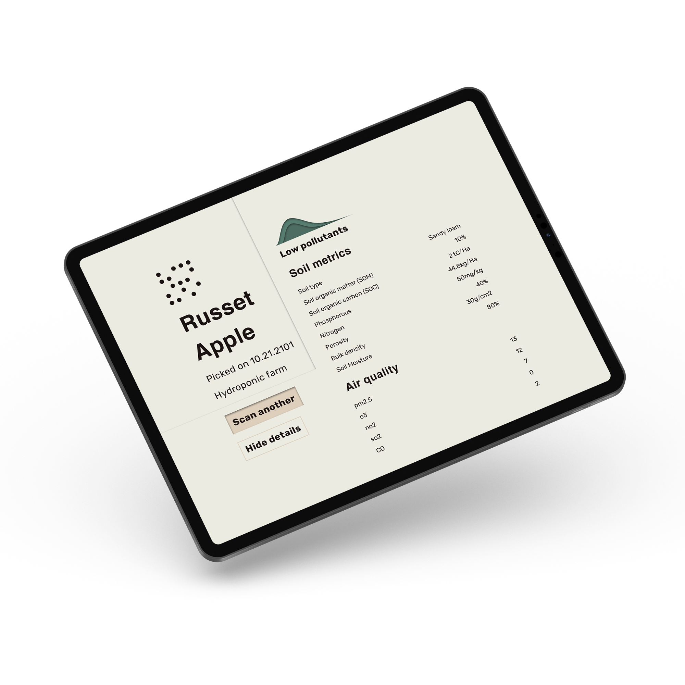
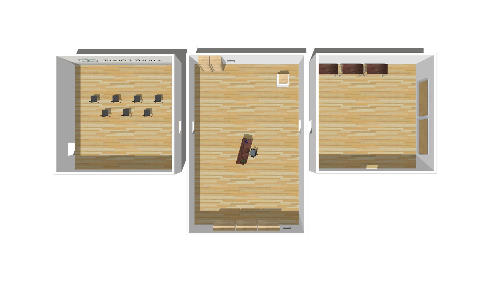

The Food Library is a piece of speculative design that incorporates elements of user experience, industrial, and graphic design. It acts a launching point for discussion about the need for a more long-term approach to climate change and food security, and outputs a piece of participatory design, as it prompts participants to begin brainstorming and drawing solutions of their own, together.

The year is 2100 and long overdue responses to climate change have eradicated large scale agriculture. In an effort to rebuild food security, governments have opened all public spaces to be farmed and created a Food Library which acts as a centralized hub to ensure all citizens have free access to food. Visitors engage with elements of this possible future, exploring audio, visual, and physical prototypes that would be found in these public food libraries.
The exhibit is composed of three separate rooms. The first being a large square room with seating and a full-wall projection of a retrospective video narrated by a citizen from the year 2100 recollecting the societal changes that necessitated the creation of local food production networks. The video details his experiences living through the hardships brought on by the food systems that defined our past, the necessary eradication of large scale monoculture agriculture, and the transition to fully local food production.

The second of the rooms contains diegetic prototypes that the visitor can interact with. These prototypes include a food scanner which has the ability to scan a piece of fresh produce and identify pollutant levels and pesticide residues from past generations, a preserves shelf containing a series of meals and preserves made with ingredients sourced locally from community gardens, and a seed exchange with an assortment of local seeds and unique lookup keys for the digital database. The artifacts in this room serve to prompt thought regarding the long term negative impact our production systems have on the environment, where we source our food from, and the connection between the damaging of our environment and the potential damaging of numerous cultures in Canada by means of inability to access certain produce, spices and meats that cannot be grown locally.
The third room contains standing desks, papers, pens, and a written prompt asking the visitors to imagine the future of food for themselves. This room serves to encourage visitors to discuss, sketch, or note pros, cons, and alternatives to the world presented through the Food Library. Once done sketching ideas, visitors can post them to a cork board which fills one of the walls. This wall will transform into an evolving co-created installation; a large participatory reflective piece created with the intention of dreaming up paths to a better future that will spark conversation and empower individuals who engage with and contribute to it.
The Food Library was conceived and designed during the COVID-19 pandemic, and as a result could not be staged in person. To help pitch and convey the ideas and intentions behind the Food Library, we created a digital walkthrough in the form of an interactive PDF. This contains text explanations, UI from diegetic prototypes, audio, video, and 3D renders. Please ensure that you are using an up to date version of Adobe Acrobat Reader with Rich Media is enabled to properly experience and engage with this document.
> Download the walkthrough here.
> If you have trouble accessing the PDF send me an email.